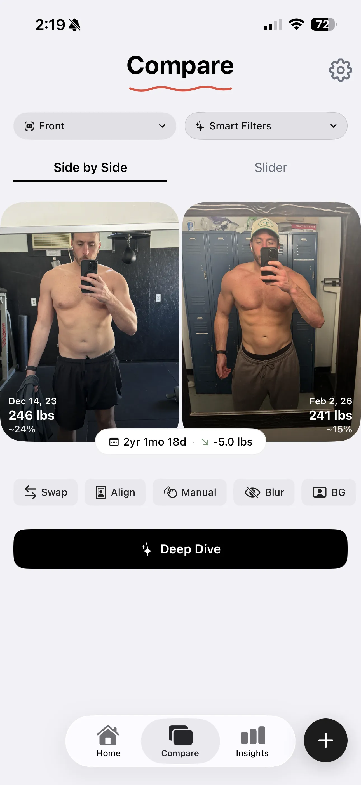
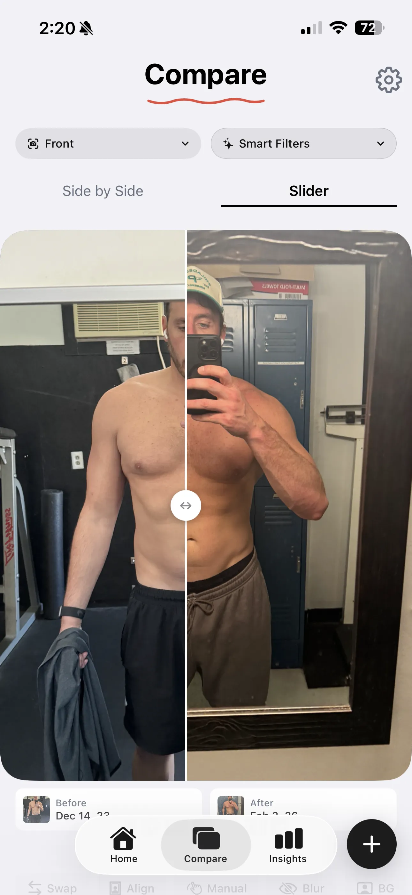

What Comparing Progress Photos Actually Looked Like Before GainFrame
Your camera roll is full of progress you can't see. Here are six ways the old method hides your gains — and how GainFrame makes every change unmissable.

The beta is live — try it free.
Join the Beta on TestFlightComparing progress photos has always been frustrating. You take a gym selfie in January. You take another one in June. You pull them both up on your phone, pinch-zoom around, hold your thumb over one while you swipe to the other, and try to answer one question: did anything actually change?
That's how most people compare before-and-after progress photos. It's broken in at least six ways — and it's the reason so many people quit when they were actually making progress.
1. You couldn't tell if your body fat actually changed
Before: You're staring at two photos taken six months apart. You think you look leaner, but you're not sure. Lighting is different. You might just be more tan. There's no number, no metric, no objective measurement — just vibes.
After: Open any two photos in GainFrame and you'll see an estimated body fat percentage on each one — no scale, no calipers, no guessing. The compare view shows the exact delta between them: "-3.2% body fat." You don't wonder if you got leaner. You know.
2. You didn't know your weight difference
Before: Maybe you remember what you weighed in January. Maybe you don't. Even if you do, you're trying to hold that number in your head while looking at photos on a completely different screen. Weight and photos live in two separate worlds.
After: GainFrame pulls your weight from Apple Health and pins it to the photo from that day. When you compare two photos, the weight difference is right there — overlaid on the images. No mental math. No switching apps. You see exactly how much you gained or lost between any two dates, in the same view as the visual proof.
3. Your photos were different sizes and not aligned
Before: One photo is a mirror selfie from four feet away. The other is a front-facing camera shot at arm's length. Your body is a different size in each frame, positioned differently, and slightly rotated. You're comparing two photos where the only thing that's consistent is that you're in both of them.
When you put them side by side, your shoulders don't line up. Your torso is higher in one photo than the other. The visual comparison is useless because the framing is completely different.
After: GainFrame auto-aligns your photos so your body is the same size, in the same position, in both frames — regardless of how the originals were shot. It detects your shoulders, torso, and hips, then scales and repositions each image to match.
The result: the only thing that's different between the two photos is your actual physique. That's what a real comparison looks like.
4. You had no workout context
Before: You're looking at a photo from March where your shoulders look bigger. Was that after a shoulder day? Were you on a new program? What exercises were you actually doing back then? You have no idea. The photo exists in a vacuum — separated from the training that produced it.
After: GainFrame connects to Hevy and attaches your workout data to the photo from that day — exercises, sets, reps, total volume. Open any photo and you'll see exactly what you did. Compare two photos and you'll see exactly which program produced the change. Your photos finally have context — and your training finally has proof. See how the Hevy integration works.

5. There was no analysis — just eyeballing it
Before: Your entire comparison process is: stare at two photos. Squint. Tilt your head. Ask your training partner "do I look bigger?" There's no structured feedback, no muscle-by-muscle breakdown, no identification of what specifically improved. It's subjective guesswork.
After: Tap "AI Compare" on any two photos and GainFrame breaks down exactly what changed — muscle group by muscle group. "Shoulders: Developing → Strong." "Chest: Needs Work → Developing." You get body fat change, weight delta, FFMI shift, and an overall physique score trajectory. Instead of guessing, you get a detailed progress report that shows you where you improved, where you stalled, and what to focus on next. Learn more about how the AI body composition analysis works.
6. You couldn't swipe between photos to spot differences
Before: You're holding your phone, switching back and forth between two photos in your camera roll, trying to spot subtle differences. Or maybe you screenshot both and crop them into a collage app. Either way, it's clunky, slow, and you miss the small changes completely.
After: GainFrame's swipe slider lets you drag a dividing line across two aligned photos. Slide left: before. Slide right: after. Changes that are invisible side-by-side become unmissable when you swipe across them — a slightly thicker arm, sharper ab definition, a wider lat spread. It's the moment most people realize they made more progress than they thought.

The real problem with comparing progress photos
The old way of comparing progress photos wasn't just inconvenient — it was actively hiding your progress from you. Misaligned framing, missing data, zero analysis. You were putting in the work and then using a broken system to judge the results. No wonder so many people quit when they were actually getting somewhere.
GainFrame fixes all of it. Auto-aligned photos. Weight and body fat overlaid on every image. AI analysis that tells you exactly what changed. A swipe slider that makes even the smallest improvements unmissable.
Your progress was always there. Now you can actually see it.
Related Articles
Try GainFrame free
AI body composition from your progress photos. No account needed.
Join the Beta on TestFlightRequires iOS 17+ · iPhone only